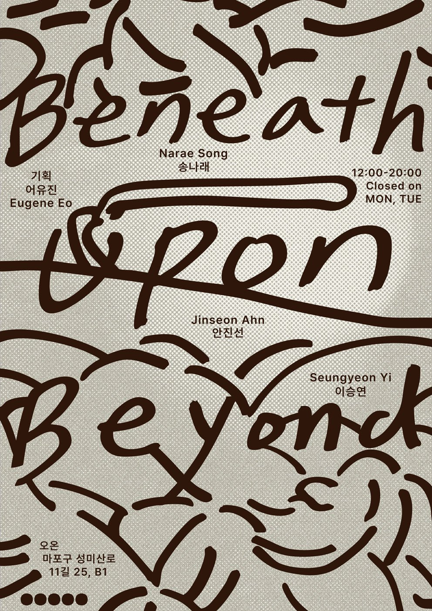
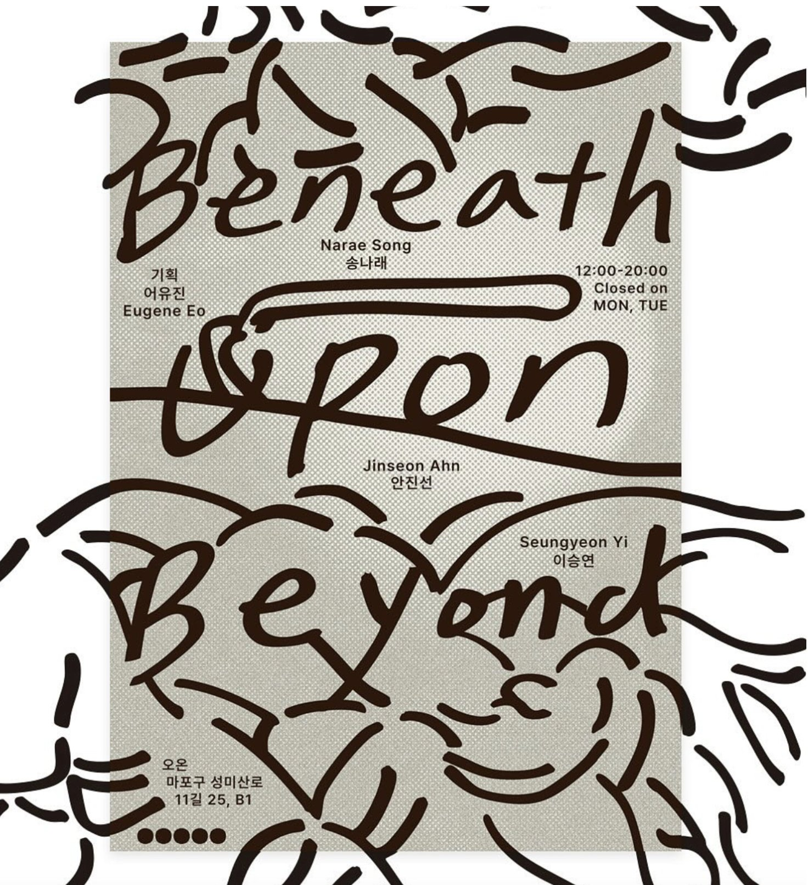
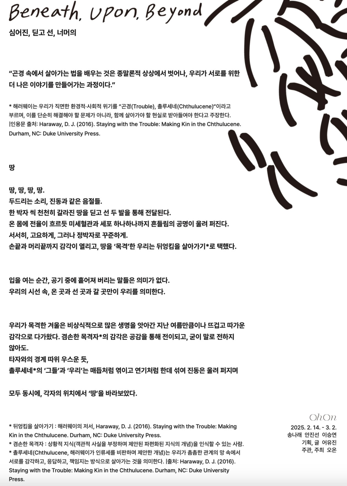
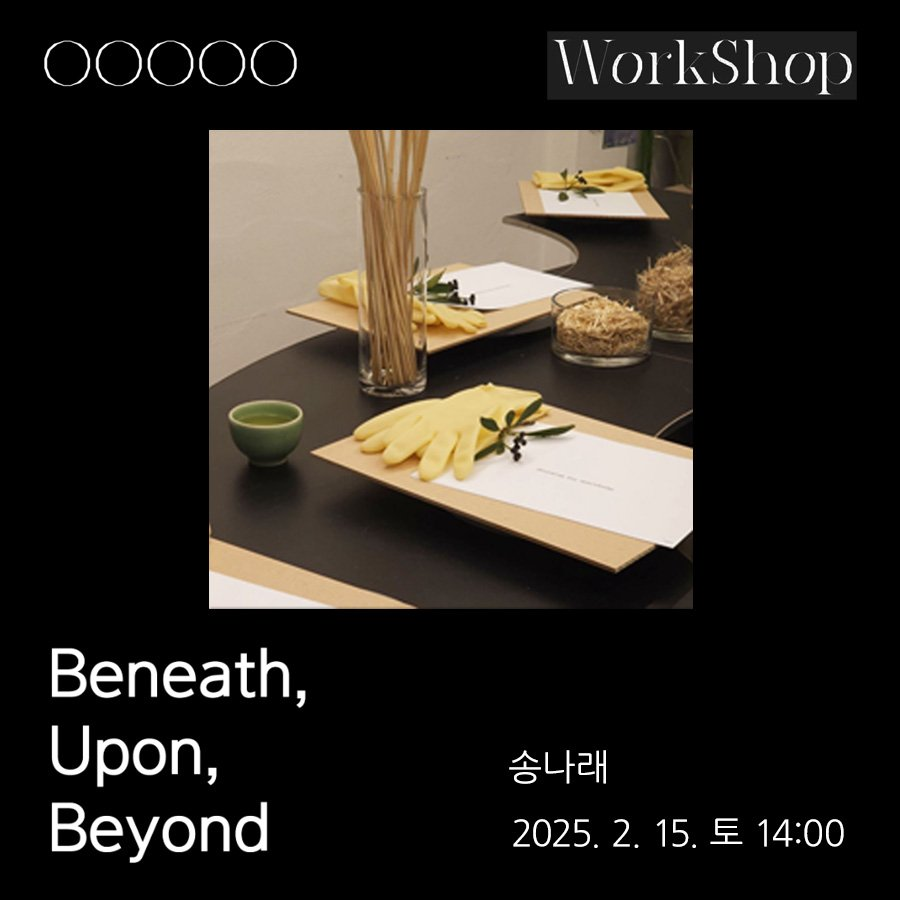
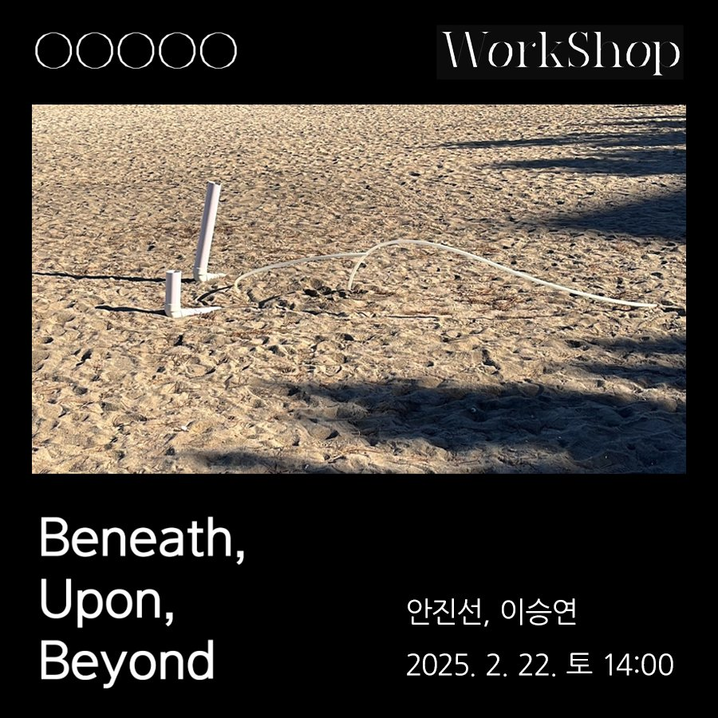
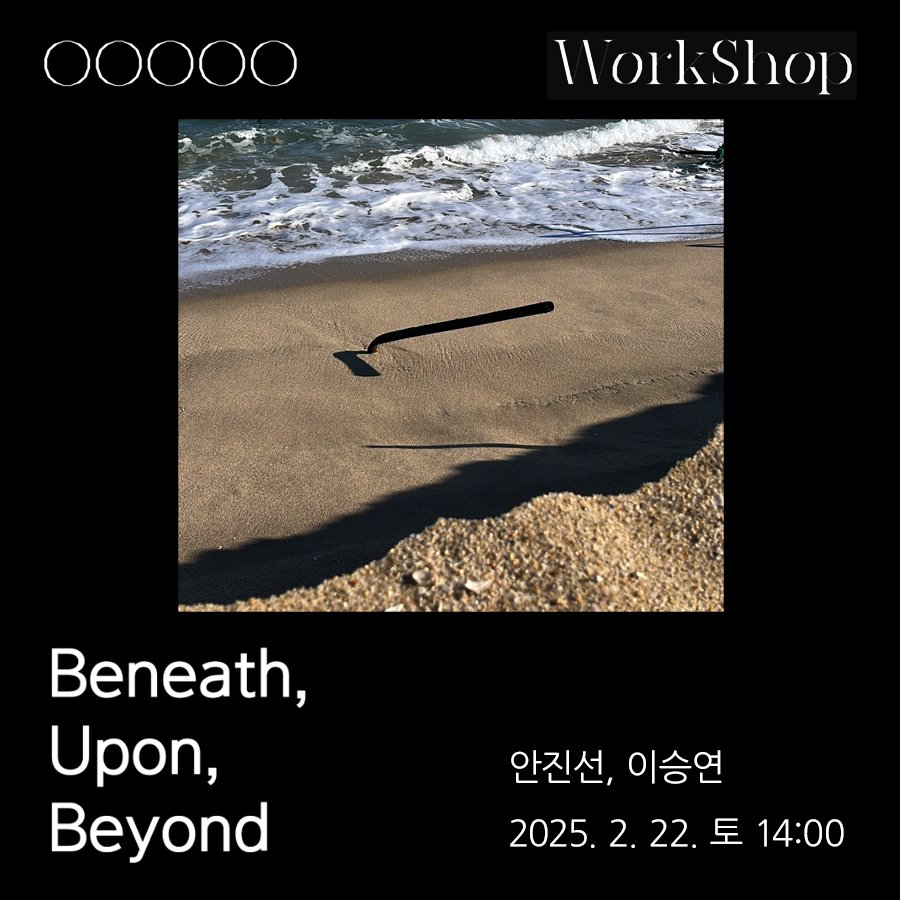
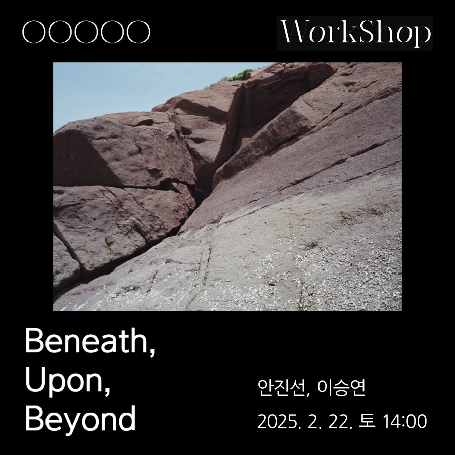
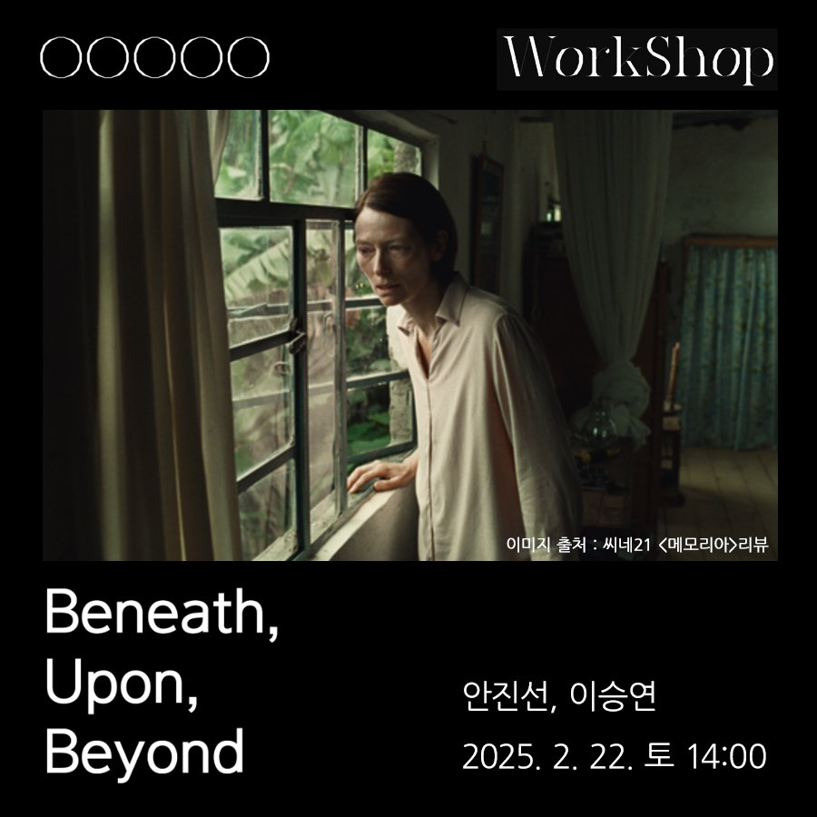
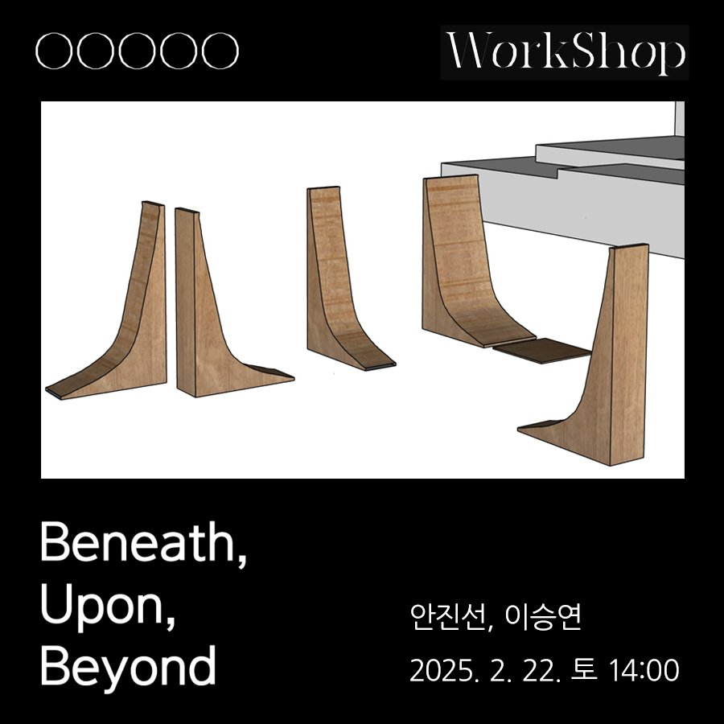

Beneath, Upon, Beyond
- . . .



워크숍Workshop






서문Statement (KR)
'땅'을 매개로 만난 세 작가는 마치 땅에 뺨을 대는 행위처럼 미세한 각자의 시선을 풀어낸다. 인류세로 인해 인간이 절박하게 질문하게 된 생존과 생명의 의미를 탐구하며, 우리가 서 있는 땅과 공생의 가능성을 탐구한다. 땅에서 재배한 재료를 사용하는 송나래, 두 발 딛고 선 땅 위를 재인식하는 안진선, 땅 너머의 비인간 존재를 감각하는 이승연의 다채로운 이야기는 관객에게 경각심이 내재된 감각을 재인식하게끔 한다.
전시 기획안Curatorial proposal (KR)
이번 전시에서 세 작가는 '땅'으로 매개된 각자의 시선을 풀어내기 위해 모였다. 땅으로부터 직접 재배한 재료, 불안 속에서 발을 딛고 있는 땅, 땅에 남아있는 진동을 통해 알아채는 비인간 존재에 대한 시선, 이 세 가지 이야기는 마치 땅에 뺨을 대는 행위처럼 미세한 결이 느껴진다. 그 미세하고 밀착된 감각을 평면과 입체, 공예와 순수를 넘나들며 하나의 명상적 미감으로 제시한다.
인류세로 인해 인간이 체감하는 이상기후와 자연 재해들은 어느덧 우리 일상 속 깊이 침투한 이야기가 되었다. 세 작가 또한 경각심이 내재된 새로운 인식 방법을 제시한다. 우리는 어떻게 생존할 것 인가? 생(生)은 무엇일까? 죽음은 무엇일까? 생물학자 도나 해러웨이가 《지구 생존 가이드》에서 종의 경계를 넘어서는 공생(sympoeisis) 가능성을 이야기했듯, 세 작가의 다양한 각도의 이야기들은 전시장에 들어선 관객으로 하여금 이 '땅' 위에서 우리가 서 있는 곳, 우리가 온 곳, 우리가 갈 곳에 대해 재인식하고 빠져들게 한다.
송나래는 자립하기 위한 일종의 바탕화면으로 땅을 인식한다. 안동에서 직접 재배한 자연물로 조형한 픽셀 형태를 '바탕화면이 되어주는 땅'으로부터 자립시키는 것이다. 이 픽셀 형태는 다양한 기능을 가진 채 테이블, 스툴, 조명, 화분 등의 오브제로 나타난다. 자연에서 자란 자연물과 인위적으로 가공된 재료들의 융합을 연구하는 작가는 Hemp(대마의 속대 껍질) 반죽을 주무르고 두드리는 반복적 행위로 마치 수행자처럼 작품에 에너지를 응축시킨다. 이 수행적 태도는 표면의 촉각을 자극하는 감각 너머, 작품 내면의 생명력을 품게 한다. 땅에서 시작해서 땅으로 가는 생명력. 그 순환 에너지의 과정을 관찰하기 위해 직접 농사를 짓고, 대마의 속대 껍질에서 나아가 합법적 부산물들로 재료를 연구하는 그의 바램은 픽셀인 조형물들이 바탕화면인 땅으로부터 잘 자립하고 그가 추구하는 균형 잡힌 세상에 숨 쉴 수 있도록 하는 것일테다. 균형은 양쪽 끝의 대립되는 성질들이 함께 관계 맺으며 일어나고, 이는 안진선의 조각에서 시각적 요소로 등장한다.
횡단보도를 건너기 위해 서 있다가 문득 발 아래의 불안을 느낀 안진선은 그 원인을 찾으려 도시를 관찰하기 시작했다. 발 딛고 서 있는 땅을 통해 퍼지는 진동에서 시작된 시선은 도시를 관찰하며 달리는 고속버스, 경기권을 진입한 밤 비행기 안의 시점으로 이동했다. 시점의 변화가 깃든 〈모서리〉는 작가가 공간을 인식하는 순서에 의해 전시장을 360°로 돌리고 큰 칼로 공간을 자르는 상상을 하며 시점에 깊이를 만든 작품이다. 작품을 따라 두 발을 디디고 서 있는 땅에서 시작되어 전시장 벽면, 천장으로 이동하는 관객의 시선은 공간을 재인식하게 된다. 그는 우리에게 친숙하지만 낯선 건축, 인테리어 재료들을 사용한다. 낯설어진 기시감 속에서 가볍고 무거운 것, 불안감과 안정감, 고정형과 조립형처럼 서로 반대되는 성질을 번갈아 배치하는 방법으로 설치된 작품들은 감각을 더욱 극대화한다. 일종의 '내진설계'와도 같은 설치와 조각 사이를 이동하며 관객은 물리적 불안전성과 도시의 다양한 요소들이 만들어낸 긴장감, 그리고 우리가 위치한 이 땅을 다시금 되돌이킬 수 있게 된다.
한편, 위의 진동과는 다르게 이승연이 감각하고자 하는 진동은 새로운 결로 보여진다. 이승연은 땅에 남은 진동을 통해 비인간 존재를 감각하고자 하기 때문이다. 부재하는 존재를 감각하던 순간을 기록해서 기억하려 하는 작가는 사라진 존재에 대해 탐구하며 흑연을 쌓아 올린다. 유령의 형상을 띈 평면과 입체 위, 수없이 반복해서 칠해지고 문질러진 연필은 마치 기억과 정념 속 뿌옇게 피어 오르는 분명한 존재의 흔적처럼 보인다. 작가가 어린 시절부터 겪어온 상실의 경험은 사라져간 역사적 존재와 그 기억을 담고 있는 장소에 대한 관심으로 이어졌다. 영화 〈메모리아〉에 나온 모든 것을 기억하는 존재는 나무, 바위, 콘크리트 같은 물질에 남아 있는 기억의 진동으로부터 이야기를 수집한다고 한다. 이승연은 그 존재처럼 작업을 통해 땅에 남아있는 진동을 기록한다. 땅에 남아있는 진동이 비인간 존재인 유령, 동물, 자연물들의 관점을 대변한다고 생각하며 그들을 지나치게 해석하지 않고, 심문하지 않고, 불필요한 강요를 하지 않으며 조용히 그들의 템포와 시선을 따라 관찰하고자 한다. 관객은 과학이 아직까지 없다고 증명하지 못한 낯설지만 낯익은 형상들을 감각하고 응시하며 빠져들게 된다.
모든 물질은 고유의 진동을 가지고 있다. 이런 진동은 때로는 다른 물질의 진동과 만나, 공명작용이 발생한다. 세 작가가 가진 고유의 진동과 땅에 대한 다채로운 재인식이 본 기획 전시로 모여 '땅'을 통해 울려 퍼질 수 있기를 바래 본다.
전시 아카이빙Archive
- Beneath, Upon, Beyond Archivist
- 오온 (OhOn) — 전시 마지막 주말 안내 Instagram
- 오온 (OhOn) — 연계 토크 · 워크숍 마감 Instagram
- 루이즈더우먼 Louise the Women — LTW 포커스 Instagram
- LTW 포커스: 안진선 X 이승연 작가 Louise the Women News